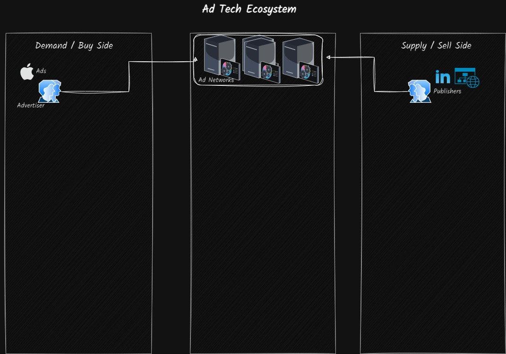
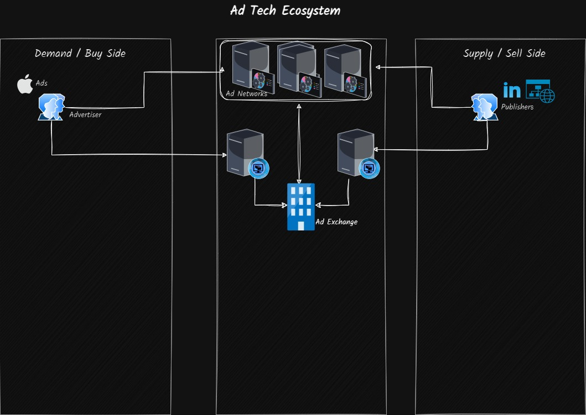
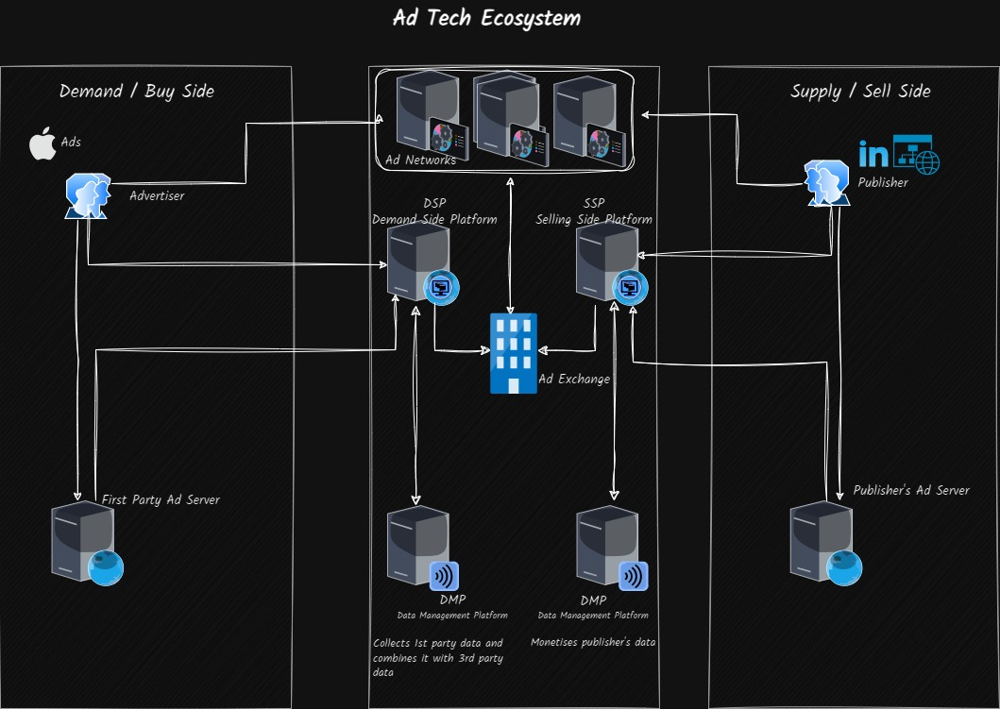

Introduction
Programmatic Advertising automates the process of buying and selling digital advertising space using business rules and data. The ecosystem of software and systems in place to automate this process is called AdTech. In this article I intend to go over the the building blocks of the AdTech ecosystem.
Players
Before we go any further, lets briefly talk about the key players in the ecosystem - Advertisers and Publishers. ## Advertisers & Advertising Agency Advertisers are people who want to put their brands, products and services in front of people. These are the guys interested in buying the Ad space. Advertisers work with Advertising Agencies to create compelling Ads to catch their target audience’s attention. ## Publishers Publishers on the other hand are people producing content and hence are the suppliers of the Ad space. Ad space could be made available on websites, digital billboards or VAST streaming services
Before the advent of the Ad Tech platform, buying and selling of the Ad slots used to happen manually and 1-on-1. Once an advertiser and a publisher had a deal and Insertion Order (IO) would be created, allowing the advertisers Ad to be displayed on the publishers Ad space.
However with the exponential growth of digital media (Websites, Digital billboards, Connected TVs, Apps running on mobile devices etc…), the number of publishers an advertiser had to negotiate with grew to an extent that it was no longer possible for him to individually negotiate with each one of them. A programmatic solution to trade Ad spaces and render Ads was required and thus the AdTech platform was born.
An AdTech platform is run by 3rd party intermediary companies. They are neither advertisers nor publishers but tend to serve as a broker between them.
AdTech Platform
The AdTech Platform has evolved over a period of time to what it is now. We will trace this evolution to get a better understanding of these different components and why they were introduced.
Ad Network

As a first step, an Ad Network was introduced to serve as a broker between a group of advertisers and publishers. Ad Networks, were introduced to help publishers sell their inventory and for advertisers to scale their digital Ad campaigns across many sites without having to deal with each publisher directly. Ad Networks aggregate unsold inventory from several publishers and offers this to the advertisers on a CPM (Cost Per Million) basis.
Besides reducing the friction inherent in an advertiser - publisher transaction, an Ad network also enhanced the trust in the system. A trursted Ad network like Google, could server as a guarantor for the quality of a publisher’s Ad space inventory while at the same time safeguarding the advertiser’s interest by reducing Ad fraud. As an example, an Ad network ensured that an advertiser was charged only when their Ads were shown on the publishers property.
The success of the Ad Network model, attracted many players (like Google, Facebook, Yahoo, Seismic etc…) each introducing their own Ad Network. An Ad Network (like Google Display Network or GDN) is a collection of publishers who chose to partner with that particular Ad Network, allowing it to display Ads on their property.
As the number of Ad Networks grew, the original problem faced by the advertisers returned. Instead of dealing with multiple publishers, they now had to deal with multiple Ad Networks. An Ad Exhchange was introduced next to solve this problem.
Ad Exchange

The Ad Exchange did to the Ad Networks, what the Ad Network did to the publishers. The Ad Exchange clubbed multiple Ad Networks together and allowed the advertisers to run their campaign across all publishers attached to all Ad Networks attached to the Ad Echange. Further they also allowed marquee publishers to directly sell their Ad space inventory on the exchange, bypassing the Ad Network. These publishers connect to the Ad exchange via an Ad Tech ecosystem component called the Supply Side Platform (SSP).
Similarly, on the demand side, the advertisers connect to the Ad exchange via yet another AdTech ecosystem component called the Demand Side Platform (DSP). The DSPs interoperate across multiple Ad exchanges and solves the advertisers problem of dealing with multiple parties. An advertiser therefore selects a DSP based on the flexibility and controls it offers to run an Ad campaign.
Supply Side Platform (SSP)
A Supply Side Platform (SSP) allows publishers to sell their inventory of Ad slots on multiple Ad Exchanges and Ad Networks and in some cases directly to the DSPs.
Demand Side Platform (DSP)
A Demand Side Platform (DSP) allows advertisers to buy Ad space by connecting to Ad Exchanges, where the available Ad spaces are traded. DSP is a key component of the real-time bidding process, which allows advertisers to buy Ad space on an impression by impression basis. To help improve targeting, DSPs often use data from Data Management Platform (DMP). DSPs can also buy Ad space by directly connecting to a SSP
At this stage the, the phrase programmatic advertising started becoming mainstream. The entire process of buying and selling Ad space was automated. The AdTech ecosystem however continued to evolve to improve the efficacy of the Ad campaign.

Data Managament Platform (DMP)
DMPs were introcued to collect user information (like cookie and device IDs) to help advertisers reach their target audience with greater accuracy. Advertisers configure the DSPs to connect with the DMPs to use the auxillary information as an input to decide which Ad slots to buy.
Third Party Ad Server
Most advertisers would use an Ad server. It is often called the Third Party Ad Server and provides the following functionalities * Decides which Ads to show. * Serves these Ads when requested * Connects with Demand Side Platform (DSP) to buy the Ad space inventory * Collects metrics around impressions to report back to the advertiser
First Party Ad Server
The publishers also have an Ad server. In this case it is called a First Party Ad Server and provides the following functionalities * Manages the inventory of available Ad slots * Displays Ads that are being sold directly to advertisers via direct campaigns * In the absence of a direcy campaign, it decides which Ad codes to choose and serve them the Ad slots